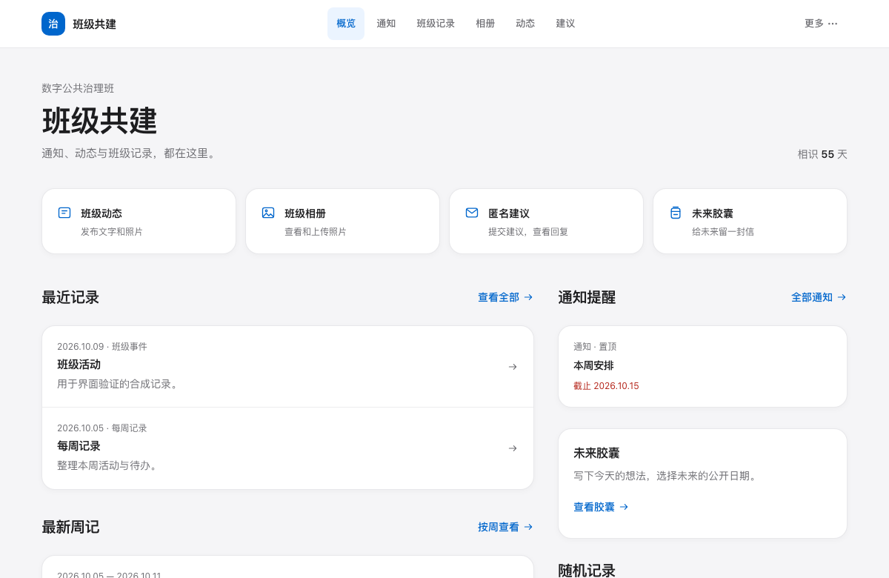

作品与实践
从学习、班级协作到桌面上的小工具。
这里收录我与 AI 一起开发、使用和持续完善的项目。
先看这三项
界面预览，打开体验。
全部作品
应用、工具与内容，按用途查找。
18 项作品
协作
班级共建平台
通知、活动、照片与建议，放在一个清楚的班级空间里。
Next.js · React · SQLite工具
桌面伙伴 · 定制与整合
把工作状态和自定义动作，变成桌面上可见的陪伴。
桌面应用 · 插件 · 社区学习
WordVault 单词本
收集生词、复习和检索。打开浏览器就能使用。
HTML · JavaScript · 本地存储协作
主题构想收集器
一起整理选题、讨论方向和研究进度。
JavaScript · GitHub API工具
QuotaRadar 额度雷达
把多个 AI 服务的额度和状态放在一起查看。
Python · Web 界面研究
AI 公共治理练习
从政策材料整理开始，练习文本分析和报告生成。
Python · 政策文本 · HTML学习
公共治理数据分析备赛指南
查看赛程、规则、准备材料和可研究的问题。
单文件网站 · 资料索引工具
多智能体协作流水线
把分析、开发和审校组织成可检查的工作流程。
Python · LangGraph工具
ManSea 本机手册检索
快速查找命令手册和相关用法。
Python · BM25 · 本机检索学习
雅思学习站
听、说、读、写与复盘记录，各有清楚的位置。
HTML · 离线网站学习
军事理论学习站
按知识点学习，用练习和错题记录检查掌握程度。
HTML · JavaScript工具
番茄钟
开始一段专注时间，到点休息。
Python · Tkinter工具
竞选演示模板生成器
填入人物信息与素材，生成16页竞选演示模板。
Python · python-pptx内容
AI 日报
按日期归档行业动态，保留原始来源。
资料整理 · HTML内容
AI 工具中文手册
把工具配置与使用方法整理成可查阅的指南。
知识整理 · HTML内容
大学规划导航
课程、目标和行动计划的信息组织实践。
多页面网站 · 信息架构内容
个人作品页
集中呈现项目、学习经历与开发实践。
HTML · CSS · JavaScript内容
个人简介网站
用一个轻量页面介绍自己。
Coze · 单文件 HTML没有匹配的作品。试试其他关键词，或切换到“全部”。
关于这些作品
我在学习数字公共治理，也通过开发练习把问题拆开、把工具做出来。AI 参与了这些项目的代码、设计或资料整理；这里展示的是实际形成的产品与过程。
能在浏览器运行的作品提供直接入口；依赖本机环境的工具提供介绍与源码。班级资料、账户信息和个人规划不进入公开演示。